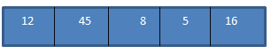
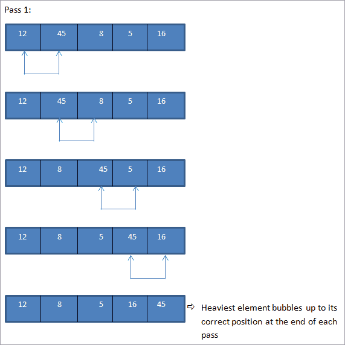
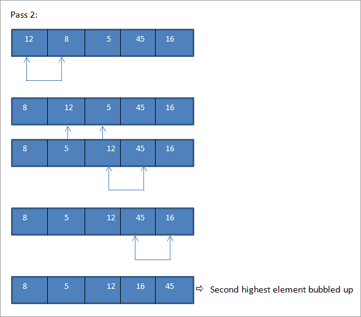
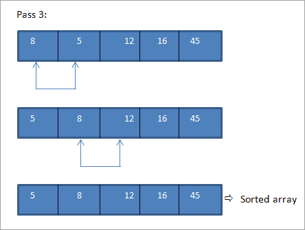

Sorting in C++
Sorting comes in handy in many different scenarios , whether you want to solve any competetive problem or when it comes to any sort of logic in a program which requires sorting. While the algorithm library in the STL has a function called sort() which will sort any vector-like object with the quickest speed, it is very important to know how the basic logic of sorting works and to be able to write your own custom sort function when the need arises. We will now see some algorithms of sorting.
Bubble Sort
Bubble sort is the simplest technique in which we compare every element with its adjacent element if they are not in order. This wat at the end of every iteration(called a pass), the heaviest element gets bubbled up at the end of the list.
   As seen above since it's a small array and was almost sorted we managed to get a completely sorted array in a few passes.
Below is the implementation in C++:
#include<iostream>
using namespace std;
int main()
{
int i, j, temp;
int a[5] = {10, 2, 0, 43, 12};
cout << "Input list ..." << endl;
for(i = 0; i<5; i++){
cout << a[i] << " ";
}
cout << endl;
for(i = 0; i<5; i++){
for(j = i+1; j<5; j++){
if(a[i] < a[j]){
temp = a[i];
a[i] = a[j];
a[j] = temp;
}
}
}
cout << "Sorted Element List ... \n";
for(i = 0; i<5; i++){
cout << a[i] << " ";
}
return 0;
}
Output: Input list … 10 2 0 43 12 Sorted Element List … 0 2 10 12 43
As seen from the output, in bubble sort technique, with every pass the heaviest element is bubbled up to the end of the array thereby sorting the array completely.
Selection Sort
double divide(int x, int y)
{
if(y == 0)
return doubleLiteral;
else
return static_cast<double>(x)/y;
}
But this is also a problem since there is no value that we can pass through the doubleLiteral which will differentiate our error case from an answer coming after dividing two valid inputs. Therefore we will resort to std::cerr and a rather complicated program, which will be even harder to understand for someone who has not written it.
#include<iostream>
double divide(int x, int y, bool& outSuccess)
{
if (y == 0)
{
outSuccess = false;
return 0.0;
}
outSuccess = true;
return static_cast(x)/y;
}
int main()
{
bool success {}; // we must now pass in a bool value to see if the call was successful
double result { divide(5, 3, success) };
if (!success) // and check it before we use the result
std::cerr << "An error occurred" << std::endl;
else
std::cout << "The answer is " << result << '\n';
}